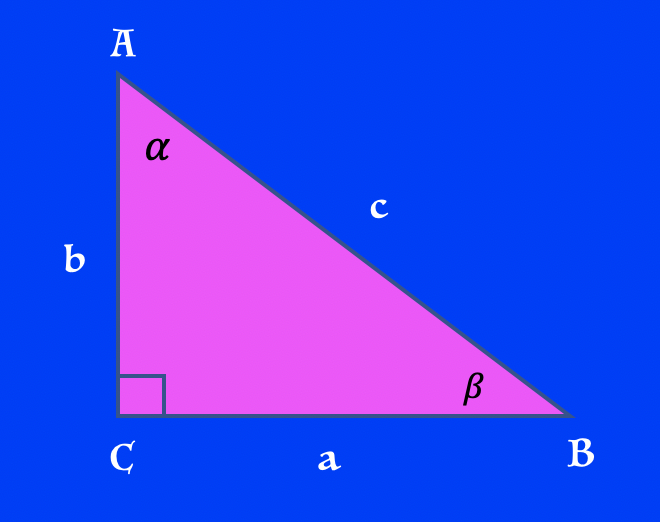
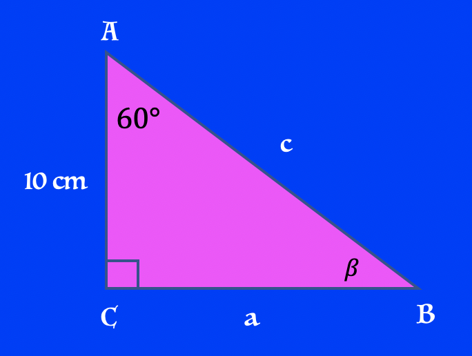
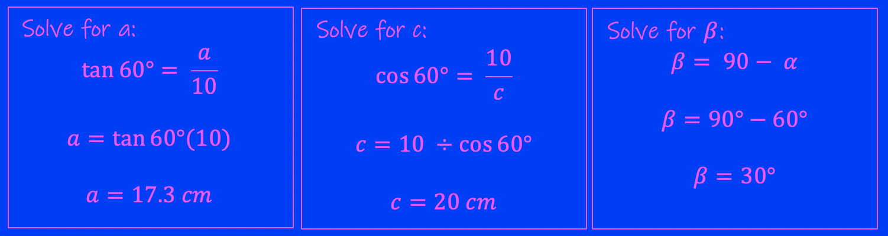

In this module we will learn how to Solve a Right Triangle
Every triangle has six pieces of information that defines it; three side lengths and three angle measures. Solving a triangle means that you have calculated all six measurements. Depending on the information you are given about your triangle to start with, you must solve for all the other measurements.
To solve a right triangle you will be required to use Trigonometry, Pythagorean Theorem, and the Triangle Sum.
Six pieces of information must be solved for. The three side lengths a, b, c and the three angles.

Example 1: Solve.

Step 1: Use Trigonometry to solve for the missing side lengths. Once you have two side lengths, you can solve for the third using Pythagorian Theorem or another Trig function. It is your choice.
